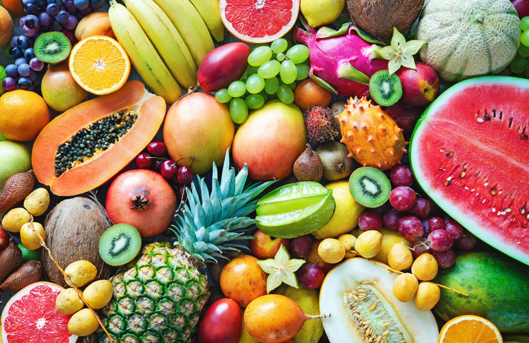
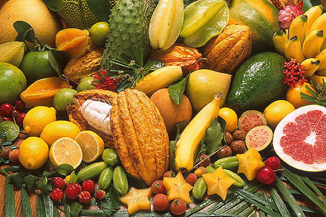

BUAH BUAHAN TEMPATAN
BUAH-BUAHAN TEMPATAN merupakan jenis buah-buahan yang dihasilkan oleh sesebuah negara tersebut. Seperti di Malaysia yang merupakan sebuah
negara beriklim tropika yang kaya dengan buah-buahan tempatan selalunya boleh menikmati buah-buahan ini sepanjang tahun bagi buah tidak
bermusim atau masa tertentu sahaja bagi buah yang keluar bermusim

